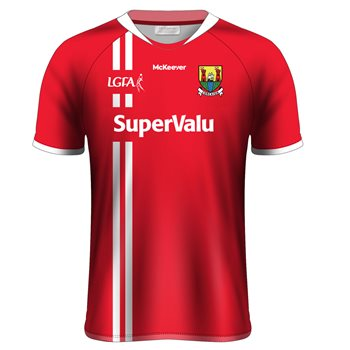
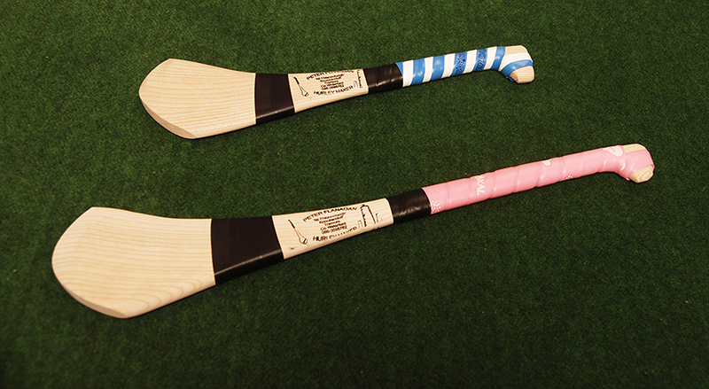
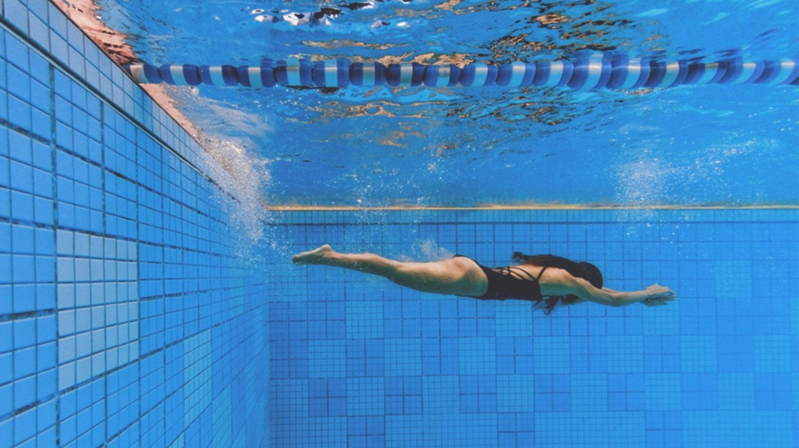

Eilish Galvins Consulting Services
Eilish Galvins Consulting ServicesSport
- 
- 
- 

I have always played sports and enjoy the game, the friendships made, and the energy.
I have participated in numerous sports
including soccer, basketball, football, camogie, and swimming.
I competed in championships for both camogie and football.
I've volunteered at Summer Camps where
I have taught kids how to improve their Gaelic sport skills.
I enjoy sport and competition at any level.
The excitement in participating in Championship sports never seems to disappear.